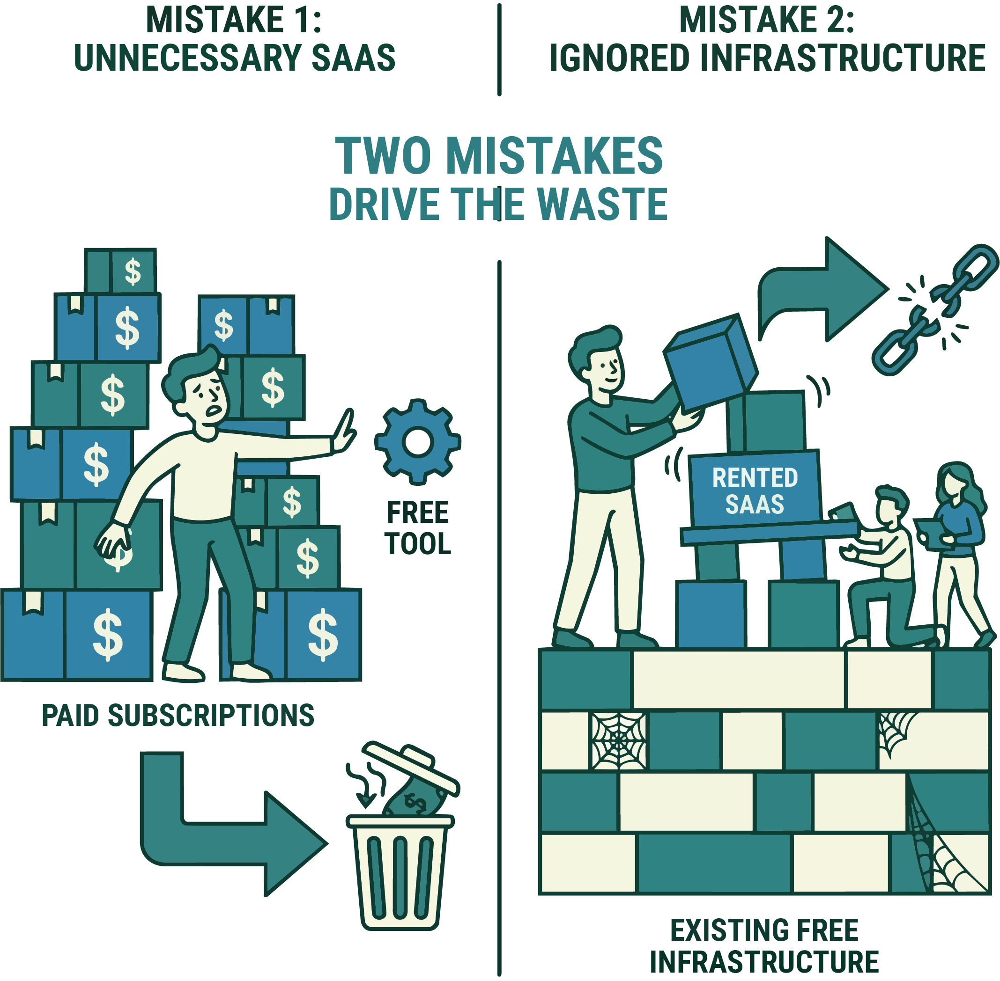
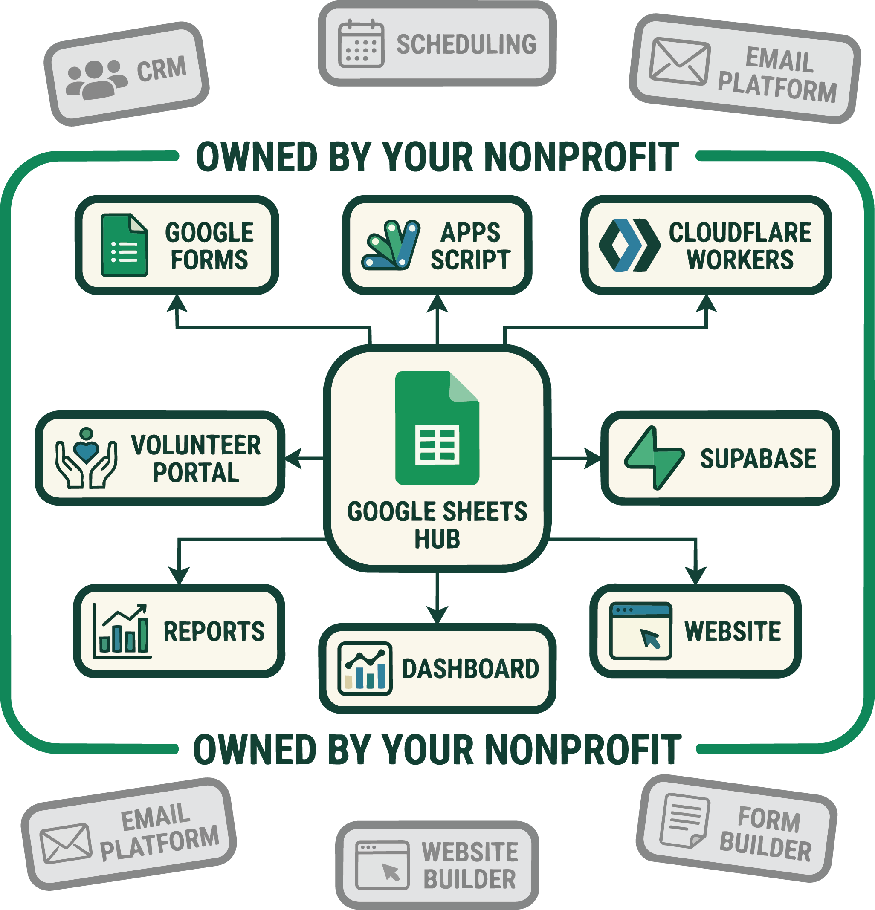

Stop renting what you can own: a nonprofit back office on free tools
Here is a failure mode I see constantly in small nonprofits, and it’s expensive precisely because it looks responsible. The org signs up for a website builder, a separate form tool, a donor CRM, an email platform, a scheduling app, a file-sharing subscription — a dozen SaaS products at $15 to $100 a month each — and a year later a meaningful slice of the budget is going to software instead of the mission. Worse, none of it is owned. Stop paying and it all evaporates: the site, the data, the donor list, the whole digital footprint was rented.
This is the operator’s side of the nonprofit series. The first two posts were about reading an organization from the outside — what type it is and what its 990 says. This one is about the inside: if you run a small nonprofit, most of your back office can be built on free tiers, and the money you save is money that never has to show up as overhead on that 990.

Two mistakes drive the waste (Figure 1). One is paying for SaaS you don’t need — subscriptions bought to solve a problem a free tool already solves. The other is subtler: not using the free infrastructure that’s sitting right there, so the org never builds anything it owns and stays dependent on whatever it’s renting this year. Both are fixable, and the pattern is almost always the same swap:
| The job | Commonly rented | Owned, for free |
|---|---|---|
| Email & docs | Paid mailbox + office suite | Google for Nonprofits (free Workspace) |
| Website | Website-builder subscription | Static site on Cloudflare/Vercel/Firebase |
| Intake & forms | Paid form / light-CRM tool | Google Forms + Apps Script → a Sheet |
| A real database | Proprietary CRM | Supabase (Postgres) or Firestore |
| Automation | Zapier-style subscription | Apps Script / Cloudflare Workers |
The rest of this post is Table 1, expanded — organized by the job to be done.
Table 1. The core swap, by job: for each back-office need, the subscription a nonprofit commonly rents versus the free tool that owns the same job.
The free stack, by job
The pieces below tend to orbit a single free hub — usually a Google Sheet — with the other services wired to it (Figure 2).

Identity, email, and documents. Google for Nonprofits gives eligible orgs a free Google Workspace edition — real @yourorg.org email, Docs, Sheets, Drive, shared calendars. Microsoft has an equivalent nonprofit program. This one program replaces a stack of paid subscriptions on day one, and it’s the keystone everything else hangs off of. (I’ve written before about why a Workspace account ends up being the quiet center of a whole stack.)
The website. A static site — which is what almost every nonprofit actually needs — hosts for free on GitHub Pages, Cloudflare Pages, Netlify, Vercel, or Firebase Hosting. Global CDN, HTTPS, custom domain, all at no cost. You do not need a $30/month website builder to publish a few pages and a donate button. (My own org’s site is a static Astro build on Firebase Hosting deployed from GitHub Actions — total hosting cost: zero.)
A real backend, when you need one. This is where orgs assume they must buy something, and usually they don’t:
- Google Apps Script — a free, serverless backend bound to your Google account. It can take form submissions, write to a Sheet, send mail, and expose a web endpoint, with no server and no bill. For a huge fraction of nonprofit “we need an app that does X” problems, a Sheet plus Apps Script is the app.
- Supabase — a free Postgres database with authentication and an auto-generated API. When you’ve outgrown a spreadsheet, this gives you a real relational database you own, on open-source foundations you can leave with your data intact.
- Firebase — Firestore, Auth, and Hosting on the free Spark plan; add pay-as-you-go Cloud Functions that stay free under generous monthly quotas. (If “serverless functions” is a fuzzy phrase, I wrote a from-scratch tour of what they are.)
Forms, intake, and automation. Google Forms feeding a Sheet, wired up with Apps Script, replaces most paid form and light-CRM tools outright. Cloudflare Workers and cloud functions handle webhooks and scheduled jobs on free tiers. GitHub gives you free source control and free CI/CD through Actions — your infrastructure as code, versioned and owned.
Reach and design. Two nonprofit-only programs are worth more than any subscription you’d cancel: the Google Ad Grant hands eligible 501(c)(3)s up to $10,000/month in free search advertising, and Canva for Nonprofits gives the paid design suite away free. TechSoup is the clearinghouse for the rest — deeply discounted or donated software from dozens of vendors, restricted to verified nonprofits.
When you should pay
Being cheap is not the goal; being a good steward is, and sometimes stewardship means paying. The honest line runs between rented convenience and genuine need:
- Accounting — use real bookkeeping software (there’s a nonprofit discount through TechSoup). Do not run your finances out of a raw spreadsheet.
- Payment processing — Stripe and PayPal have discounted nonprofit rates, but per-transaction fees are a real, unavoidable cost of accepting money.
- Email at scale — once you’re sending to thousands, a proper platform (most have nonprofit pricing) earns its keep on deliverability alone.
The test isn’t “is it free,” it’s “does this buy something we actually need that a free tool can’t provide?” A payment processor passes. A $40/month drag-and-drop website builder, when Cloudflare Pages is free and yours forever, does not.
Why this is a stewardship issue, not a tech preference
Every dollar not spent on unnecessary software is a dollar of program capacity, and — to close the loop with the rest of the series — it’s a dollar that never inflates the overhead you’d see on the 990. But the deeper point is ownership. Tools built on your own Google account, your own GitHub repo, your own Postgres database are yours: portable, exportable, and outside the reach of a vendor’s next price hike or shutdown. A nonprofit’s digital footprint should be an asset it owns, not a subscription it services. The free tier isn’t the scrappy compromise — for most small orgs it’s the more durable choice.
Program eligibility (Google for Nonprofits, the Ad Grant, TechSoup, Canva for Nonprofits) generally requires 501(c)(3) status and verification; terms and free-tier limits change, and some hosts restrict commercial use — check current terms before you build on them. This is practical guidance, not an endorsement of any specific vendor.